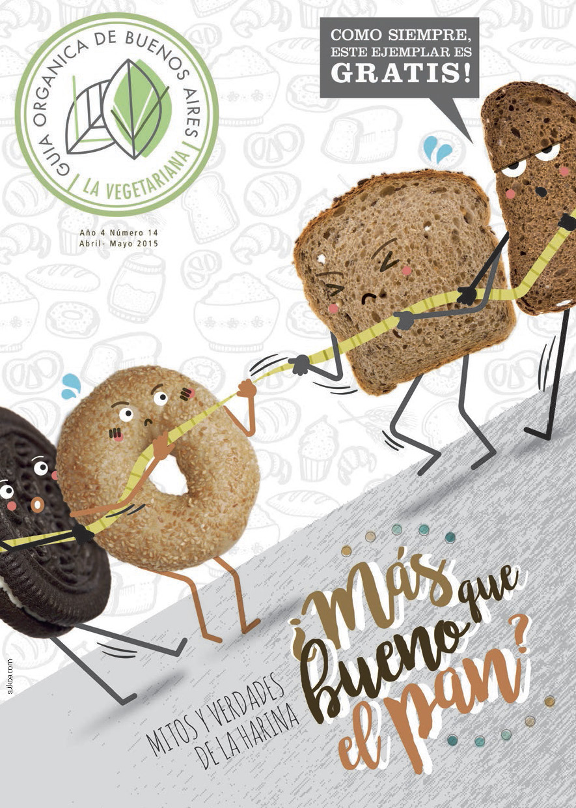

Quienes Somos
La Vegetariana, Guía Orgánica de Buenos Aires, es una revista de distribución gratuita que difunde una manera más saludable de vivir.
Quienes la hacemos creemos que hacía falta un medio que mostrara de forma clara y concreta que se pueden hacer cosas por mejorar nuestra vida y nuestro hábitat.
Por eso -desde hace más de dos años- nos encargamos personalmente de cada una de las áreas, que incluyen desde el armado editorial y el diseño, hasta la distribución.
La Vegetariana no es una revista para vegetarianos, es una publicación para acercar a todo aquel que quiera a una vida mejor.
×Los ritos y la comida.
Siempre pienso que con el plato de comida se pueden entrenar muchos hábitos que luego podemos trasladar a nuestra vida cotidiana… y si afirmamos que...
Volviendo a la rutina
Tal vez dejamos pasar algunos meses pero... la idea es que puedas mantener un cuerpo relajado y disponible mientras te ocupás de tus obligaciones...
Brotes de fenogreco
el Heno Griego
El sitio web para veganos
La Revista
Edición Impresa.
Podés ver aquí nuestras ediciones impresas
Recetas

Vianda Nutritiva de Vegetales y Legumbres
Por Alvaro Latorre Prado, Chef La Orgánica
Panettone Integral para las Fiestas
Por Alvaro Latorre Prado, Chef La Orgánica

Cazuela de mar vegana
Por Alvaro Latorre Prado, Chef La Orgánica

Tarta de calabaza y espinaca
Por Alvaro Latorre Prado, Chef La Orgánica
Y Además...
Noticias
Agenda Ferias de Buenos AiresCalendario de ferias y mercados en abril y mayo en la ciudad.
Noticias
Bendita y León ¿una serie vegana?¡Sí, se trata de la primera serie web vegana en español!